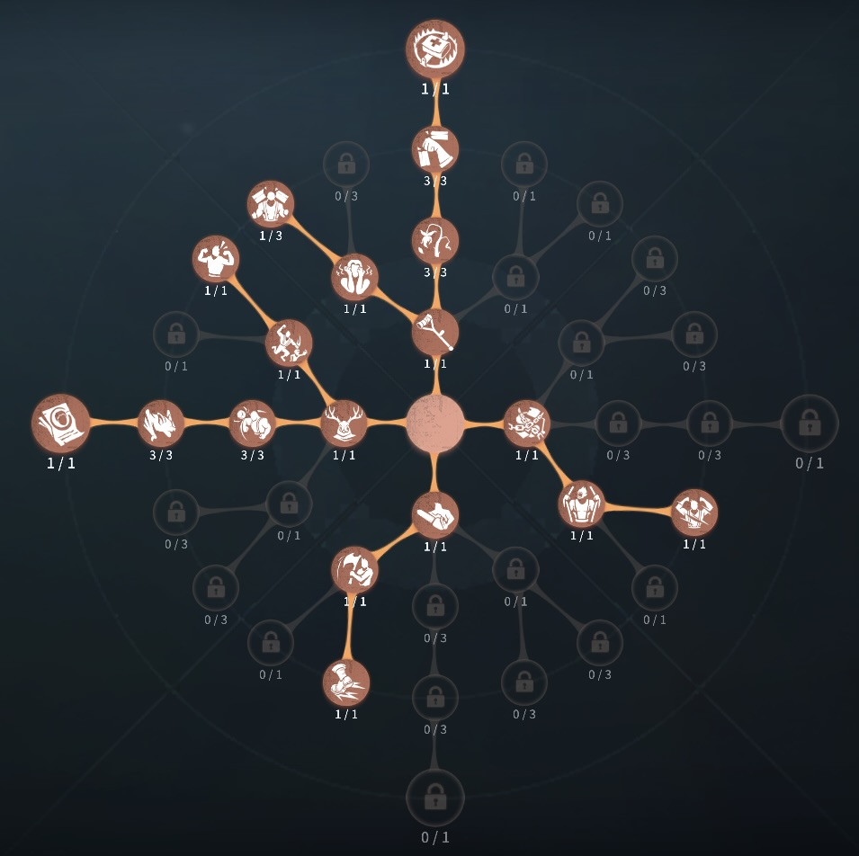
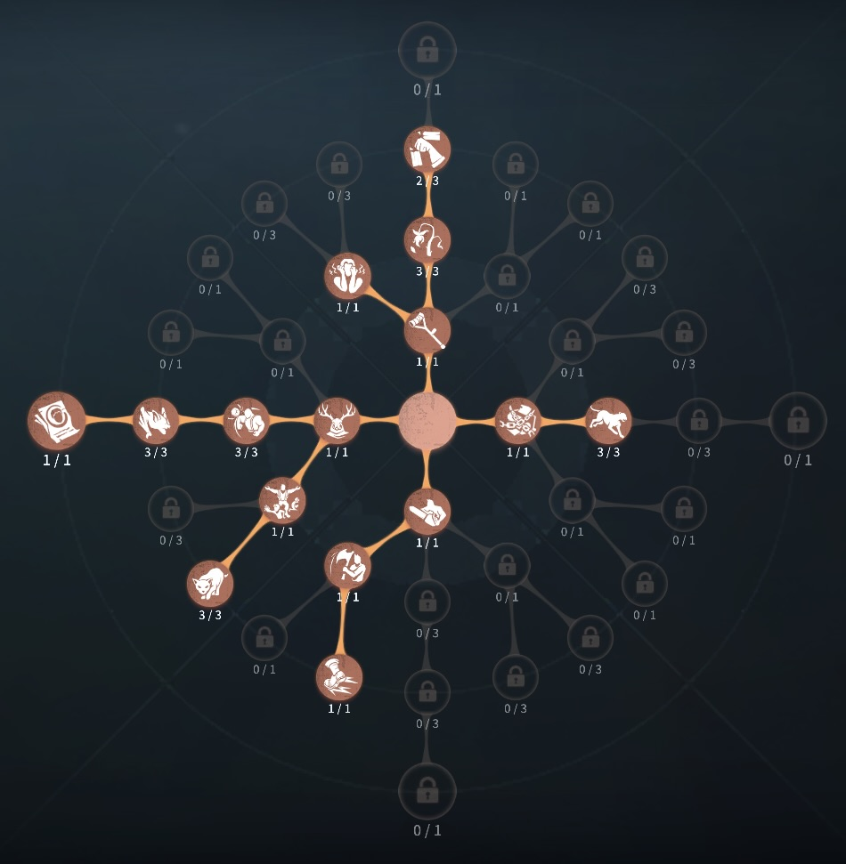

狂眼（バルク）の評価
檻に閉じ込められて即死
外在特質とスキル
特質1:制御台
・マップに制御台が設置されており、バルクは制御台を操作することですべての監視装置を操作できる。 サバイバーも制御台を3.5秒かけて操作でき、その場所の監視装置のみを操作できる。サバイバーが操作台を操作している間その制御台を操作できず、一定時間エネルギーが回復しない。特質2:監視装置
・監視装置を操作中は制御台周辺に仕掛け壁を生成できる。仕掛け壁は設置する場所が多いほどエネルギーを消費する。特質3:仕掛け壁
・仕掛け壁が作られた時、その地点にいたサバイバーに0.5ダメージ与える。サバイバーは仕切け壁を乗り越えると1ダメージ受ける。仕掛け壁は一定時間経過で消失する。 未解読暗号機、地下室、通電後のゲート周辺など一部のところでは、仕掛け壁の時間が減少する。存在感1：コントロール端末
・その場で監視装置を操作できるようになるがエネルギーの消費量が増加する。存在感2：オーバークロック
・10秒間仕掛け壁の設置クールタイムと消費エネルギーの消費量が減少する。しかし、使用後40秒間対象の監視装置のエネルギーが回復しなくなる。ハンターの立ち回り方
1. 初動の立ち回り
狂眼（バルク）は 「コンソールを使った壁攻撃」
を駆使し、解読妨害に特化したハンターです。通常のチェイス性能は低いため、
直接追いかけるのではなく、壁を駆使してサバイバーを追い詰める
ことが重要です。
・試合開始直後の行動:
✅ まずはコンソールを開く →
最寄りの暗号機を確認し、サバイバーがいる場所を特定。
✅ すぐに壁を出して妨害する → 解読を遅らせるため、
暗号機付近に素早く壁を配置 する。
✅ 壁を当てて負傷を狙う →
壁に挟むことでダメージを与え、解読を妨害しつつ負傷状態にする。
✅ サバイバーの位置を把握 →
壁の隙間や窓越しにサバイバーがどこへ行くか確認し、次の動きに備える。
2. コンソールの使い方
バルクの最大の強みは 「コンソールを使った遠隔攻撃」
です。コンソールの使い方次第で、
暗号機妨害・負傷・ダウンを狙うことが可能 です。
・コンソールの基本操作:
✅ 暗号機周辺に壁を作る →
サバイバーが解読できないように、暗号機の周囲を封鎖する。
✅ 板や窓を封鎖する →
板グル・窓越えをされる前に、逃げ道を壁で塞ぐ。
✅ サバイバーを閉じ込める →
壁を連続で出しサバイバーを囲んでダメージを与える。
3. チェイス中の立ち回り
バルクは通常攻撃よりも 壁でダメージを与えることが重要 です。
・壁を使って通路を封鎖:
進行方向を塞いで、サバイバーを特定のルートに追い込む 。
・窓越えを防ぐ:
窓の前に壁を置くことで、窓を乗り越えさせないようにする。
・特質「監視者」を活用:
サバイバーの位置を把握しやすくなり、 壁の配置がしやすくなる。
4. 暗号機・ゲート前での立ち回り
・コンソールで暗号機を完全封鎖:
通電を防ぐため、 暗号機周辺を壁で囲む
・ゲート前で時間を稼ぐ:
サバイバーが脱出しようとするタイミングで
ゲート前に壁を設置し逃げ道を塞ぐ。
・ダウンしたサバイバーを壁で隔離:
ダウンしたサバイバーを隔離することで、もし起死回生を使って起きても、仕掛け壁の乗り越えでダウンしてしまうためサバイバーは実質起き上がることができず、3対1の状況を作れる
5. 注意点
🔹 壁の精度を上げる →
無駄な壁を作ると逆に逃げ道を作ってしまうので、的確な場所に配置する練習が必要
。
🔹 コンソールの位置を把握する →
マップのどこにコンソールがあるか覚え、すぐに操作できるようにする。
🔹 通常攻撃を過信しない →
バルクは通常攻撃より壁でダメージを与える方が強力なので、
無駄な通常攻撃は避ける。
おすすめの内在人格
閉鎖空間傲慢型人格
この内在人格は、閉鎖空間と傲慢で確実に一人を仕留める、警戒で3台分された時はすぐに仕留めることができる、中毒症と怒りで粘着を対処、衝動でため攻撃に加速する。

傲慢のみ型人格
この内在人格は、獲物を追うと板割り、衝動、狩猟本能で確実にファーストチェイスを終わらせる、確実に一人を飛ばしてから崩していく人格


みんなのコメント